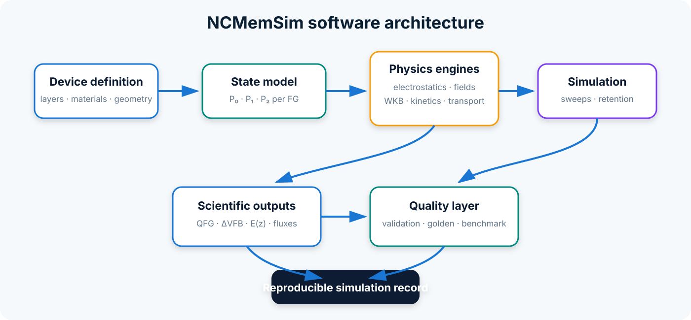

Software architecture¶
Design goals¶
NCMemSim separates geometry, materials, state, physical kernels, solvers, validation, and presentation. This supports incremental replacement of a physical model without rewriting the complete workflow.
Main data flow¶
DeviceBuilder ──► Device ──► ordered Layer list
└──► FloatingGateLayer metadata
│
▼
DeviceState / FloatingGateState
│
┌────────────────────────┼────────────────────────┐
▼ ▼ ▼
ElectrostaticsEngine FieldSolver1D TunnelingEngine
│ │ │
└────────────────────────┼────────────────────────┘
▼
TransportEngine / OccupancyEngine
│
▼
Simulator workflows
relax_voltage / sweep / C–V
│
▼
RetentionSolver
│
┌───────────────────────┼──────────────────────┐
▼ ▼ ▼
validation golden benchmark
│
▼
reproducibility manifest
Core modules¶
device.py, layers.py, and builder.py¶
Device owns the ordered stack. Layer describes a dielectric or semiconductor region, while FloatingGateLayer adds nanocrystal-specific parameters. DeviceBuilder constructs the V1 and V2 device families and normalizes scalar or per-FG inputs.
materials/¶
The material package separates named material definitions, composition-dependent models, band-alignment models, optical placeholders, registries, and parameter provenance.
state.py¶
DeviceState contains one FloatingGateState per physical FG. Each FG stores probability arrays and derived local quantities. Geometry validation prevents a state from being silently applied to a mismatched device.
electrostatics.py, coupling.py, and fieldsolver.py¶
The compact coupling model maps FG charge into flat-band-shift contributions. FieldSolver1D reconstructs a piecewise one-dimensional potential and electric field across the stack and evaluates local quantities at FG centers.
tunneling.py and transport/¶
TunnelingEngine evaluates WKB-type transmission. The transport package builds an explicit network of substrate/FG nodes and tunnel links. Inter-FG transfers are conservative after availability limiting.
kinetics.py¶
The occupancy engine evolves P0, P1, and P2 under configured rates. It is independent from the high-level sweep or retention workflow.
simulator.py¶
Simulator orchestrates electrostatics, fields, tunnelling, transport, and occupancy. It exposes voltage relaxation, sweeps, C–V-style simulation, and retention entry points.
retention.py¶
RetentionSolver advances the coupled state at fixed bias, normally zero gate bias, using geometrically increasing timesteps and selected output times.
validation.py, golden.py, benchmark.py, and reproducibility.py¶
These modules provide scientific consistency checks, deterministic regression references, performance measurements, and hash-based run manifests.
Public versus internal API¶
The supported public symbols are re-exported by ncmemsim/__init__.py. Importing from internal modules is useful for development but may be less stable before v1.0.
Architecture diagram¶

The diagram separates device/state description, physics engines, simulation orchestration, scientific outputs and quality assurance.